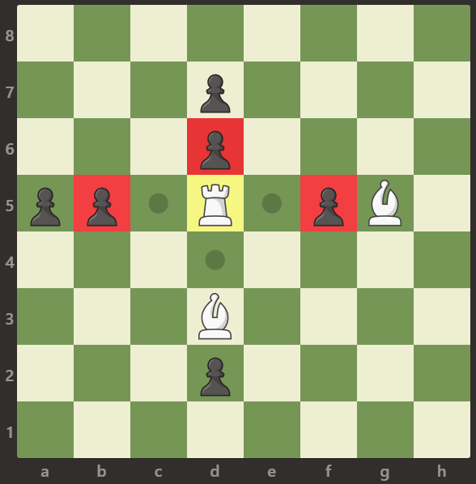

999. 可以被一步捕获的棋子数
| 题目信息 | 内容 |
|---|---|
| 难度 | 简单 |
| 核心模式 | 找到白车后向四个方向直线扫描，遇到第一个棋子即停 |
| 时间复杂度 | O(64) = O(1) |
| 空间复杂度 | O(1) |
题目与约束
给定一个 8 x 8 的棋盘，只有一个 白色的车，用字符 'R' 表示。棋盘上还可能存在白色的象 'B' 以及黑色的卒 'p'。空方块用字符 '.' 表示。
车可以按水平或竖直方向（上，下，左，右）移动任意个方格直到它遇到另一个棋子或棋盘的边界。如果它能够在一次移动中移动到棋子的方格，则能够 吃掉 棋子。
注意：车不能穿过其它棋子，比如象和卒。这意味着如果有其它棋子挡住了路径，车就不能够吃掉棋子。
返回白车 攻击 范围内 兵的数量。
示例 1：

输入：[[".",".",".",".",".",".",".","."],[".",".",".","p",".",".",".","."],[".",".",".","R",".",".",".","p"],[".",".",".",".",".",".",".","."],[".",".",".",".",".",".",".","."],[".",".",".","p",".",".",".","."],[".",".",".",".",".",".",".","."],[".",".",".",".",".",".",".","."]]
输出：3
解释：
在本例中，车能够吃掉所有的卒。
示例 2：

输入：[[".",".",".",".",".",".",".","."],[".","p","p","p","p","p",".","."],[".","p","p","B","p","p",".","."],[".","p","B","R","B","p",".","."],[".","p","p","B","p","p",".","."],[".","p","p","p","p","p",".","."],[".",".",".",".",".",".",".","."],[".",".",".",".",".",".",".","."]]
输出：0
解释：
象阻止了车吃掉任何卒。
示例 3：

输入：[[".",".",".",".",".",".",".","."],[".",".",".","p",".",".",".","."],[".",".",".","p",".",".",".","."],["p","p",".","R",".","p","B","."],[".",".",".",".",".",".",".","."],[".",".",".","B",".",".",".","."],[".",".",".","p",".",".",".","."],[".",".",".",".",".",".",".","."]]
输出：3
解释：
车可以吃掉位置 b5，d6 和 f5 的卒。
提示：
-
board.length == 8 -
board[i].length == 8 -
board[i][j]可以是'R'，'.'，'B'或'p' -
只有一个格子上存在
board[i][j] == 'R'
核心不变量
车沿某个方向直线扫描时，遇到的第一个棋子决定该方向的结局：若是卒
'p'则可吃并计数、随即停止；若是象'B'则被挡住、停止且不计数。无论遇到哪种棋子，该方向都不能再继续往深处走。
完整推导
思路推导
-
直觉与痛点（棋盘很小，但要算清"挡住"） 棋盘固定 8×8，规模极小，最直接的做法就是模拟。关键不是效率，而是正确处理"车不能穿过棋子"——它只能吃到自己所在行或列上、且中间没有其它棋子的第一个炮子。
-
破局思路（定位 + 四方向扫描） - 先遍历棋盘找到白车
'R'的行列坐标(r, c)。 - 从(r, c)出发，沿上、下、左、右四个方向一格一格走：遇到'.'继续走；遇到'p'计数+1并结束该方向；遇到'B'直接结束该方向；走出边界也结束。 -
为什么"遇到第一个棋子就停"是对的 车不能穿过任何棋子。所以每个方向上它最多只能吃到最靠近自己的那一个棋子；一旦这个棋子是象，就完全吃不到该方向更远的卒；若这个棋子是卒，吃掉后后面被"隔开"的卒也不在此次一步之内。因此每个方向只判断第一个非空格子即可。
小例子（示例 3）：车在 (3,3)。向上扫到 (2,3)、(1,3) 都是 'p'，第一个是 (2,3) 的卒 → 计 1 后停止；向下扫到 (5,3) 是 'B' → 停止、不计数；向左扫到 (3,1) 是卒 → 计 1；向右扫到 (3,5) 是卒 → 计 1，再往右是 'B'。合计 3。
- 收尾 四个方向累计得到的就是答案。
Java 实现（numRookCaptures）
class Solution {
public int numRookCaptures(char[][] board) {
int n = 8;
int r = -1, c = -1;
// 1. 定位白车
for (int i = 0; i < n && r == -1; i++) {
for (int j = 0; j < n; j++) {
if (board[i][j] == 'R') {
r = i;
c = j;
break;
}
}
}
int count = 0;
int[][] dirs = {{-1, 0}, {1, 0}, {0, -1}, {0, 1}}; // 上、下、左、右
// 2. 四个方向直线扫描
for (int[] d : dirs) {
int x = r + d[0], y = c + d[1];
while (x >= 0 && x < n && y >= 0 && y < n) {
if (board[x][y] == 'p') { // 第一个棋子是卒：可吃并停止
count++;
break;
} else if (board[x][y] == 'B') { // 第一个棋子是象：被挡住
break;
}
x += d[0];
y += d[1];
}
}
return count;
}
}
复杂度
- 时间：O(64) = O(1)。棋盘固定 8×8；定位车 O(64)，四个方向合计最多扫描 8×4 个格子，都是常数。
- 空间：O(1)。只使用若干整型变量与固定的方向数组。
易错点与扩展（面试高频考点）
- 四个方向都要扫：漏掉任意一个方向都会少算；建议用统一的方向数组遍历，避免手写四段重复代码出错。
- 遇到第一个棋子就停：只判断"第一个非空格子"。若直接找同方向的第一个
'p'而忽略中间的'B'，就会出现"穿过象吃到卒"的错误。 - 边界判断：
while里要四个边界都判断（x>=0 && x<n && y>=0 && y<n），尤其别漏x/y的下界。 - 计数只针对卒：
'B'是己方的象，不能计入攻击数；空方格'.'只表示可以继续前进。 - 扩展：若是"八方向皇后/主教"或"判断车能否在一步内攻击到某目标"，思路仍是"沿方向直到第一个棋子"；把方向数组换成八方向、把停止条件改为"遇到目标即返回"即可。
力扣原题
C++ 实现
#include <vector>
using namespace std;
class Solution {
public:
int numRookCaptures(vector<vector<char>>& board) {
int n = 8, r = -1, c = -1;
// 定位白车
for (int i = 0; i < n && r == -1; i++) {
for (int j = 0; j < n; j++) {
if (board[i][j] == 'R') { r = i; c = j; break; }
}
}
int cnt = 0;
int dirs[4][2] = {{-1, 0}, {1, 0}, {0, -1}, {0, 1}}; // 上、下、左、右
for (auto& d : dirs) {
int x = r + d[0], y = c + d[1];
while (x >= 0 && x < n && y >= 0 && y < n) {
if (board[x][y] == 'p') { cnt++; break; } // 第一个是卒：吃并停止
if (board[x][y] == 'B') break; // 第一个是象：被挡
x += d[0];
y += d[1];
}
}
return cnt;
}
};
Python 实现
from typing import List
class Solution:
def numRookCaptures(self, board: List[List[str]]) -> int:
n = 8
r = c = -1
# 定位白车
for i in range(n):
for j in range(n):
if board[i][j] == 'R':
r, c = i, j
break
if r != -1:
break
count = 0
for dx, dy in ((-1, 0), (1, 0), (0, -1), (0, 1)): # 上、下、左、右
x, y = r + dx, c + dy
while 0 <= x < n and 0 <= y < n:
if board[x][y] == 'p': # 第一个是卒：吃并停止
count += 1
break
if board[x][y] == 'B': # 第一个是象：被挡
break
x += dx
y += dy
return count